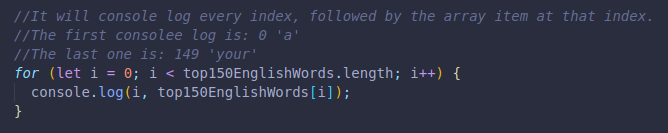
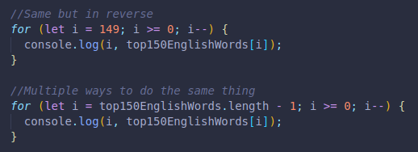
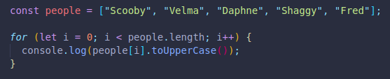

We can also use our for loop to work with data structures, like arrays for example.
Here we made an array of the top 150 most frequently written words in English.
We will use a loop to console.log the index of each word, followed by the value of the array index or word itself.
We give our variable i an initial value of 0, that way we can match it with our first index, index 0.
We ask it to check if i is less than the lenght of our variable top150EnglishWords, we don´t use less than or equal to this time, only less than. The reason is that the lenght is one more than the last index, so we would print one saying: 150, undefined. (The last array item of the 150 words has an index of 149)
And we increase our variable by 1 each time until we reach 149, 1 less than the lenght of the array, 150.
Lastly, we console log both the variable value, which is a match to the index of each array item, followed by the specific array item in our words variable that matches that number. (If at 5, the number 5 and the item at index 5. variableName[5];)
We set the initial variable i to the number that matches the last index.
Alternatively in the second example we use the lenght of our words variable - 1, since the lenght is 150 and our last index is 149.
Then, set the condition: as long as i more than or equal to 0...(equal is used to make sure we include the first index item at index 0)
i -- just substracts one from our intial variable.
Lastly, we print the index matching number and the array item again.
Another example:
Here we print each index, but convert it to uppercase first. We run through every available item in the array, then stop.
